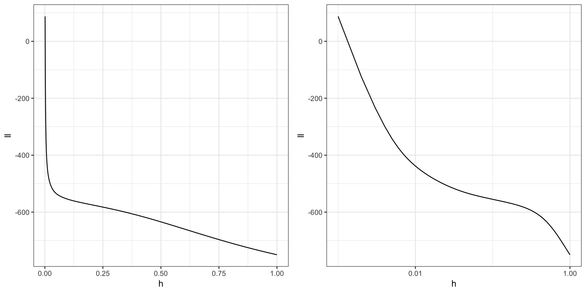
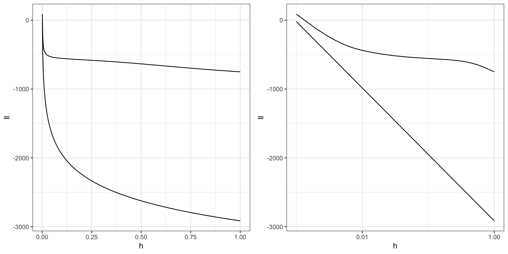

2.1 Univariate density estimation
Recall the data on \(\phi\)- and \(\psi\)-angles in polypeptide backbone structures, as considered in Section 1.1.1.


Figure 2.1: Histograms equipped with a rug plot of the distribution of \(\phi\)-angles (left) and \(\psi\)-angles (right) of the peptide planes in the protein human protein 1HMP.
We will in this section start the treatment of methods for smooth density estimation for univariate data such as data on either the \(\phi\)- or the \(\psi\)-angle. Multivariate methods for estimation of e.g. the bivariate joint density of the angles is postponed to Section 2.4.
2.1.1 Likelihood considerations
Let \(f_0\) denote the unknown density we want to estimate.
If we fit a parametrized statistical model \((f_{\theta})_{\theta}\) to data using the estimator \(\hat{\theta}\), then \(f_{\hat{\theta}}\) is an estimate of \(f_0\).
The histogram is a nonparametric density estimator, \(\hat{f}\), of \(f_0\).
- We are interested in nonparametric estimators because
- we want to compare data with the parametric estimate \(f_{\hat{\theta}}\)
- we don’t known a suitable parametric model
- visualization
“With four parameters I can fit an elephant, and with five I can make him wiggle his trunk.”
— John von Neumann
The Normal-inverse Gaussian distribution has four parameters, the generalised hyperbolic distribution is an extension with five, but Neumann was probably thinking more in terms of the spline based expansion in Section 2.1.4 with four or five suitable basis functions.
For a parametric family we can use the MLE \[\hat{\theta} = \text{arg max}_{\theta} \sum_{i=1}^n \log f_{\theta}(x_i).\]
For nonparametric estimation we can still introduce the log-likelihood: \[\ell(f) = \sum_{i=1}^n \log f(x_i)\]
Let’s see what happens if \[f(x) = f_h(x) = \frac{1}{nh \sqrt{2 \pi}} \sum_{j=1}^n e^{- \frac{(x - x_j)^2}{2 h^2} }.\]


Figure 2.2: (ref:gausKern)
Log-likelihood
hseq <- seq(1, 0.001, -0.001)
ll <- sapply(hseq, function(h)
sum(log(ffun(phipsi$psi, h))))
Log-likelihood
If \(x_i \neq x_j\) when \(i \neq j\)
\[\begin{align*} \ell(f_h) & = \sum_{i} \log\left(1 + \sum_{j \neq i} e^{-(x_i - x_j)^2 / (2 h^2)} \right) - n \log(nh\sqrt{2 \pi}) \\ & \sim - n \log(nh\sqrt{2 \pi}) \end{align*}\]for \(h \to 0\).
Hence, \(\ell(f_h) \to \infty\) for \(h \to 0\) and there is no MLE in the set of distributions with densities.
n <- nrow(phipsi)
asympll <- - n * log(n * hseq * sqrt(2 * pi))p1 <- p1 + geom_line(aes(hseq, asympll))
p2 <- p2 + geom_line(aes(hseq, asympll))
In the sense of weak convergence it actually holds that \[f_h \cdot m \overset{\mathrm{wk}}{\longrightarrow} \varepsilon_n = \frac{1}{n} \sum_{i=1}^n \delta_{x_i}\] for \(h \to 0\).
The empirical measure \(\varepsilon_n\) can sensibly be regarded as the nonparametric MLE of the distribution. But the empirical measure does not have a density,
2.1.2 R digression
Alternative, which is faster but more special purpose:
diffsq <- outer(phipsi$psi, phipsi$psi,
function(x, y) (x - y)^2 / 2)
n <- nrow(phipsi)
ll2 <- sapply(hseq, function(h)
sum(log(colSums(exp(-diffsq / h^2)))) -
n * log(n * h * sqrt(2 * pi)))The second implementation reveals the \(n^2\)-complexity of the computations by the call to outer.
2.1.3 Method of sieves
Nonparametric Maximum Likelihood Estimation by the Method of Sieves
Penalized and constraint MLE.